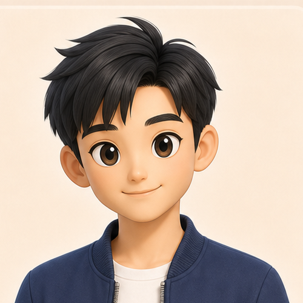

讲解形象设置
讲解形象管理
设置讲解画面、服装、声音和表达风格，使整体形象贴合景区文化。

待命
你好，我是智能导游。欢迎来到灵山胜境，让我陪你了解这里的故事。
形象与服装
声音与表达
画面效果
设置说明
设置保存到景区后台，游客仍可选择自己喜欢的音色。实际播放效果请在导览页面确认。
设置讲解画面、服装、声音和表达风格，使整体形象贴合景区文化。

你好，我是智能导游。欢迎来到灵山胜境，让我陪你了解这里的故事。
设置保存到景区后台，游客仍可选择自己喜欢的音色。实际播放效果请在导览页面确认。